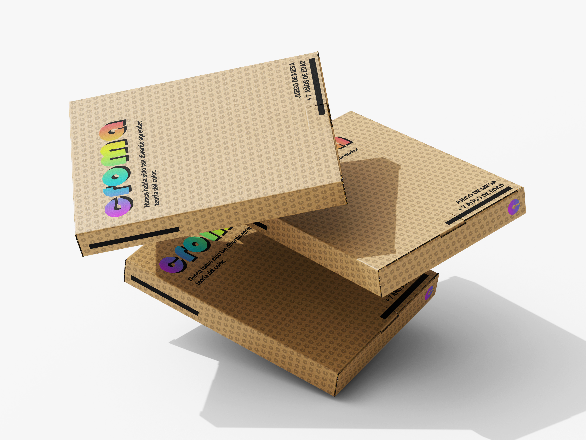
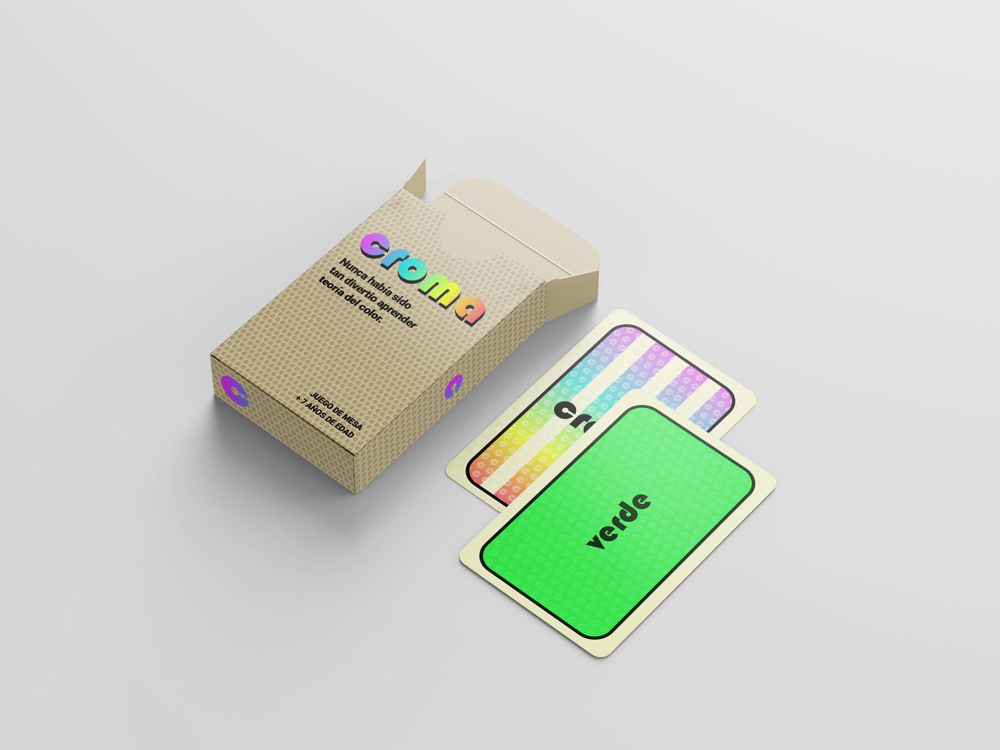
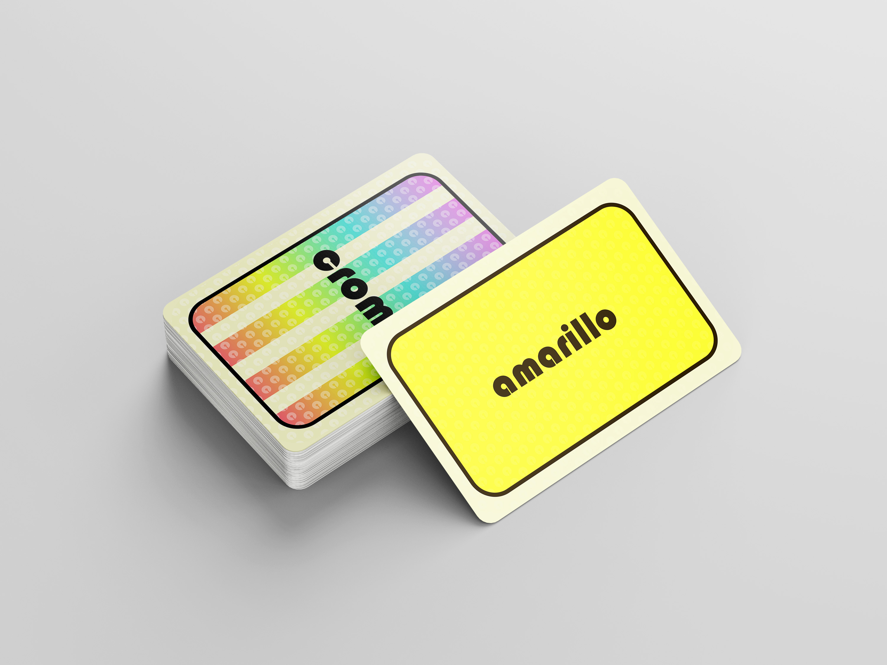

¡Bienvenido a Croma!
El juego de mesa donde combinar colores es la clave para ganar y aprender.
Explora la teoría del color de forma divertida y visual. A través de retos
creativos, aprenderás a distinguir armonías, contrastes y matices mientras compites
con tus amigos por crear las combinaciones más precisas y hermosas.




¿De qué trata el juego?
Croma es una experiencia lúdica diseñada para enseñar
los principios básicos y avanzados del color:
- La rueda cromática y sus relaciones.
- Combinaciones análogas, complementarias y triádicas.
- Colores cálidos y fríos.
- Saturación, tono y luminosidad.
Ya seas principiante o artista experimentado, Croma te reta a pensar en color y afinar tu ojo.